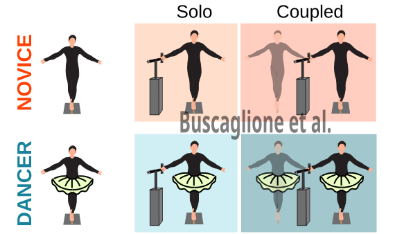
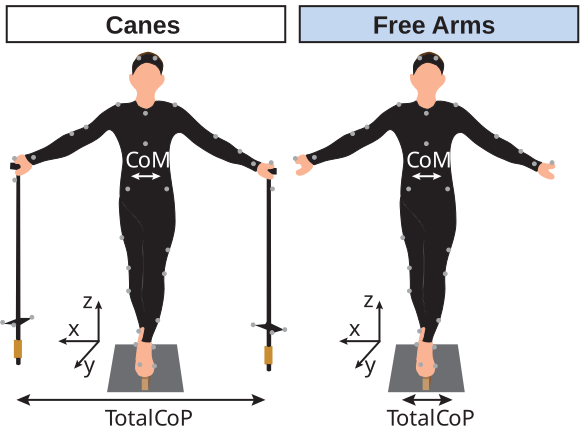
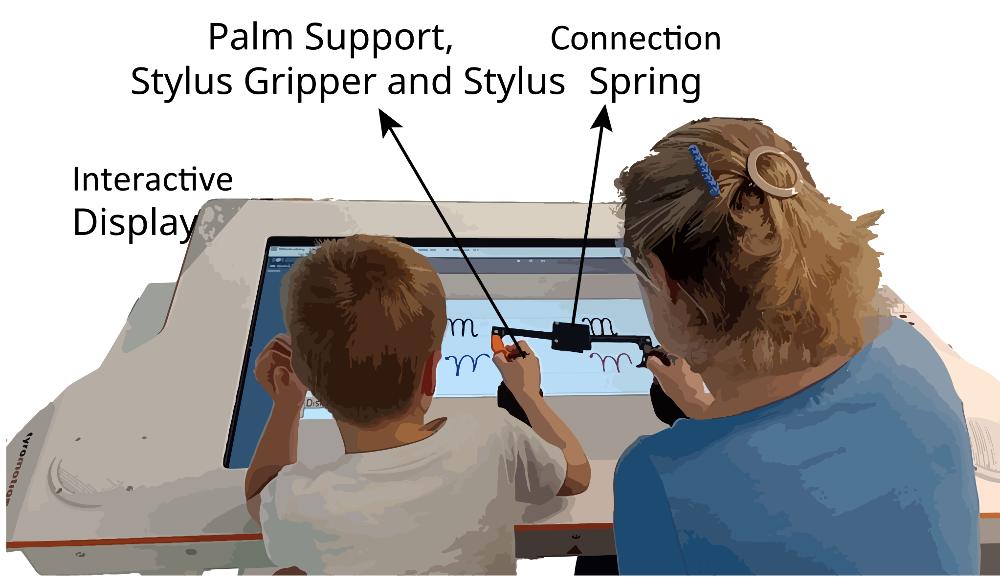
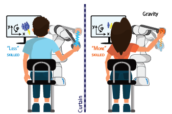
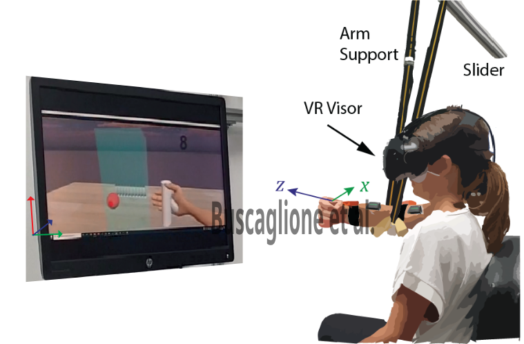

Is holding hand beenficial for postural balance?

In this research I evaluated the effect of holding hands on postural balance in trained (ballet dancers) and untrained (college students) individuals. Whole-body kinematic data were analyzed to compute the center of mass (CoM), and force platform data were used to compute the center of pressure (CoP). Postural balance metrics (CoM sway and velocity) were computed to assess balance performance. Information content of the interaction force and its relation with participants movement has been analyzed to assess different startegies in using haptic information between trained and untrained individuals.
Following these results, a biomechanical computational model consisting of a double inverted pendulum with an LQR controller was developed to examine postural control strategies in trained and untrained individuals. Results are still under investigation.
Status: in preparation
Does using hand-held canes enhance postural balance learning?

In this research I evaluated the effect of hand-held canes on postural balance by analyzing the center of mass and center of pressure while participants stood on a beam with and without canes. While canes enhances postural balance during the task, no adaptation or balance improvement was observed in the trials immediately after the cane trials.
Status: in preparation
Importance of force modulation in complex object interaction in post-stroke and healthy individuals

In this study we evaluated the difference in force modulation between healthy and post-stroke individuals when manipulating an object with an internal degree of freedoom not directly controlled by the user. Results showed that post-stroke individuals showed disrupted force modulation that was not correlated with kinematic metric, unlike neurotypical individuals, who showed a correlation between kinematics and kinetics.
Conference Paper link:
Paper: IEEE EMBC (2026)
Journal Paper: in preparation
Can haptic coupling improve children's handwriting?

Learning to write fluently is a demanding motor task for children, and many struggle with it throughout primary school. In this study we investigated whether bidirectional haptic feedback can support handwriting practice. Twelve child–caregiver dyads copied single letters and letter pairs in cursive, either physically coupled through a custom haptic interface or alone. A GUI developed in Unity ran on an interactive display, where participants saw the target letters and wrote with a 3D-printed stylus. When coupled, the less skilled partner in each dyad improved, especially in handwriting fluency, and this improvement persisted when they wrote alone immediately afterwards.
Can a robot-mediated connection help the less skilled partner without burdening the more skilled one?

When two people are physically connected, for example when moving a table together or supporting a child learning to ride a bike, they exchange haptic information that improves their motor performance. However, this benefit usually comes at the cost of extra effort for the more skilled partner. In this study we investigated whether an asymmetric connection, mediated by robots, could avoid this trade-off. Pairs of participants performed a 3D tracking task of position and orientation while connected through two robotic manipulators, with different coupling condition. Results indicated that with an asymmetrical coupling (less stiff for the more skilled partner) there was the highest trade-off between joint performance and effort: the less skilled partner improved, while the more skilled partner's performance and effort were unchanged.
Tele-impedance control using only wearable sensors

As collaborative robots spread into new fields, they need teleoperation methods that can be exploited in unstructured environement. In this study I tested a tele-impedance controller that maps both the position and the joint stiffness of the user's arm to an avatar in a virtual reality. Unlike previous approaches, it relies only on wearable sensors (six EMG and two magneto-inertial sensors), so it can be used outside the lab. We compared it with a traditional position-based controller in a 2-DoF virtual task involving physical interactions (developed in Unity). The tele-impedance controller was less physically demanding and more intuitive than the position-based one. Interestingly, participants kept regulating both the stiffness and position of their own arm even with the position controller, where stiffness had no effect on the virtual arm.
Paper: Scientific Reports (2024)
Interface for wheelchair control
I developed a control interface for a powered wheelchair. The work covered the full system: the hardware and acquisition of ultrasound sensors for obstacle detection, the wheelchair control, and an iPad GUI through which the user sent commands to the motors. Data from the GUI and sensora were managed and elaborated using a microcontroller (PIC series) to send commands to the motors.